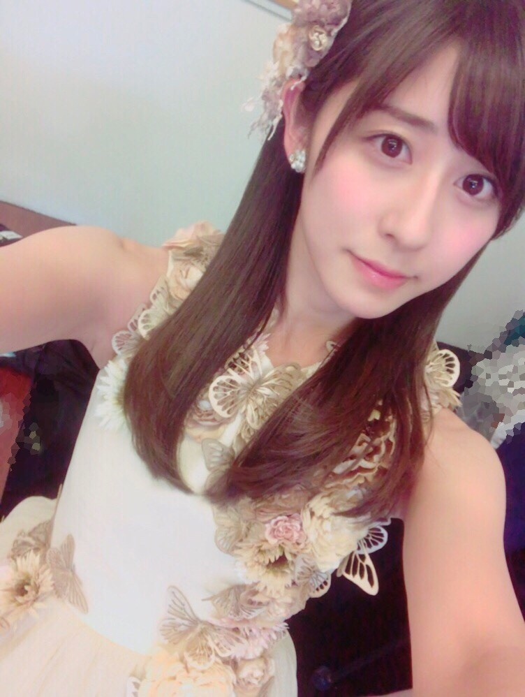
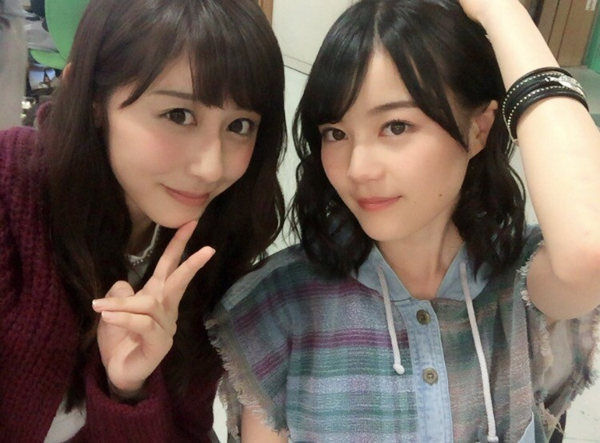

| 2017/01 28 Sat | 変身 |
ちはるーむへようこそ
生写真の撮影の時って
私はいつもワクワク。
撮影するのは大変だけど、
いろんな格好になれるし
いろんな自分に出会えるから！

鳥になれたり...

ずっと可愛いなと思ってた衣装が着れたり...

いくちゃんがほら、いつもなら絶対
しないようなポーズしてくれたり...
色んな格好したメンバーを一気に
見られるのも楽しいな〜◎
この前は鳥が沢山いたり、
お姫様みたいなドレスの子がいたり、
アウトドアな山登りするみたいな子がいたり。
みんなが撮影の順番待ちしている姿が
本当可愛いです。
---------------------------------------♡
♬ ChihaMusic
「街色」KANA-BOONさん
もやもや葛藤している
このもどかしい気持ちが描かれていて
奥が深い。
ふいに聞きたくなる。
"今日が終わる時、考える
「今はどこだ？」
青い春の迷い鳥の様に
羽ばたいたよ"
青い鳥、小さい頃から好き！
夢があるし希望がある気がする。
青い鳥の迷い鳥ってところが
このもどかしさを上手く表現している...！
凄いな〜
いまはスヌーピー展で買った
1950sスヌーピーのぬいぐるみを小脇に抱え
足元には眠るさくちゃん、
足の先には寝そべるくまごろう。
という状況でした( ¨̮ )
おやすみ
斎藤ちはる
コメント(319)
2017/01/28 23:58